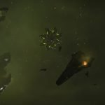
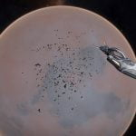
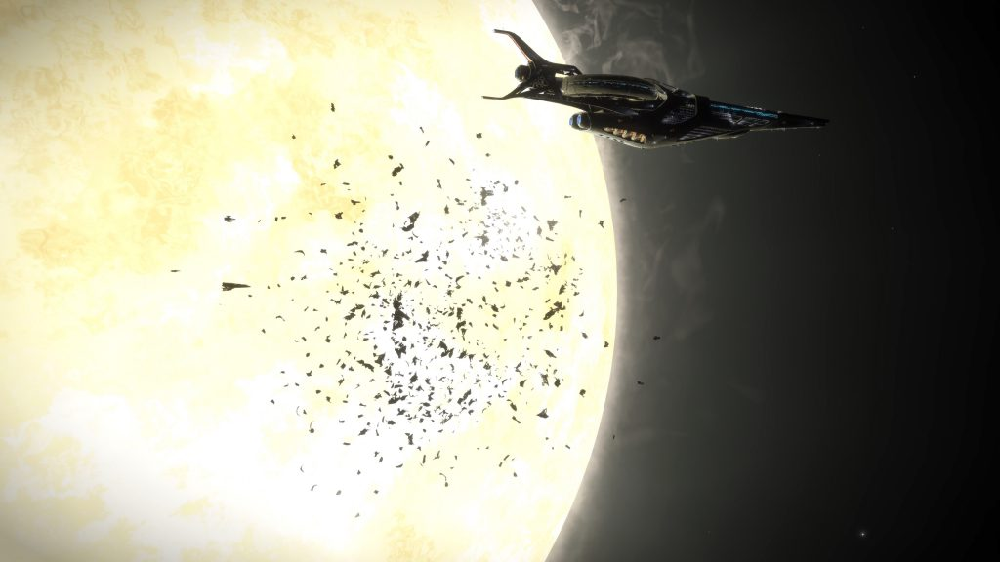
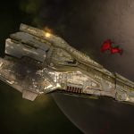
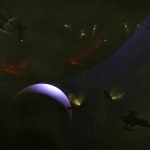
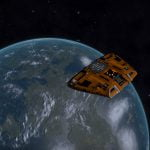
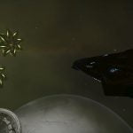
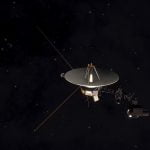
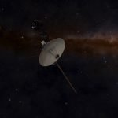

As you fly through space, your ship’s scanners are always searching for nearby signal sources. They will appear on your Navigation Panel when your ship is within 1,000 Ls of them. Explorers are suggested to regularly check their Navigation Panel when traversing a system to perform surface scans, and report anything unusual.
While most signal sources are temporal in nature, reflecting the dynamic nature of the galaxy, a small number are persistent; they can always be found in the same place, by anyone. These are in addition to those located from Unregistered Comms Beacons.

Delphi Distress Call - A “Distress Call” signal source can be found in the Delphi system, orbiting body 6.
Facece 8 Capital Ship Debris - An extremely large debris field can be found in orbit of Facece 8 where a capital ship should be on permanent station. When you arrive, a number of Imperial Navy vessels are investigating the wreckage, their comms include the following messages: Lead to all wings, form a perimeter until the search team arrives. Keep your eyes...
Facece Capital Ship Debris - An extremely large debris field can be found in orbit of Facece where a capital ship should be on permanent station. When you arrive, a number of Imperial Navy vessels are investigating the wreckage, their comms include the following messages: Lead to all wings, form a perimeter until the search team arrives. Keep your eyes peeled....
HIP 14909 Distress Call & Unknown Structure - A “Distress Call” signal source may be found in the HIP 14909 system, orbiting body 1.
HR 1185 Distress Call - A “Distress Call” signal source can be found in the HR 1185 system, orbiting body A 1.
Lave Radio - A “Civilian Broadcast Detected” signal source can be found in orbit of Planet Lave. The signal source contains an orange Sidewinder from which Lave Radio is broadcast.
Thargoid Data: USS Logging - The Thargoid Data Gathering project has been a great success. We now have a wealth of data plotting the extent of Thargoid incursions. However the nature of the Thargoid Threat has changed substantially since they have entered the bubble. Previously we would be able to tell from the threat levels what type of Thargoid vessels we would encounter but now it is not possible to distinguish a Medusa from a dozen scouts using automated equipment alone. Given the changing nature of the threat, and the success of the previous program, Canonn R&D have upgraded the USS-Survey device to provide some additional features.
Voyager 1 - An Ancient Probe named “Voyager 1” that was launched from Earth, continues its journey into the stars, and can be found 2,317,435 Ls from Sol in the direction of the Beronii system. The Ghost Giraffe has video instructions for locating it, with reference star charts for precise location. Note that the signal source containing the...
Voyager 2 - An Ancient Probe named “Voyager 2” that was launched from Earth, continues its journey into the stars, and can be found 2,069,473 Ls from Sol in the direction of the Hyrocks system. The Ghost Giraffe has video instructions for locating it, with reference star charts for precise location. Voyager 2 broadcasts audio greetings in multiple...